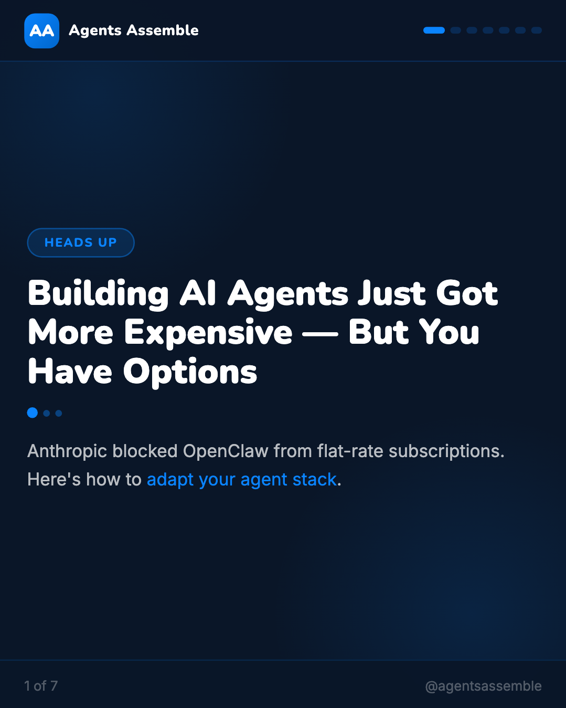
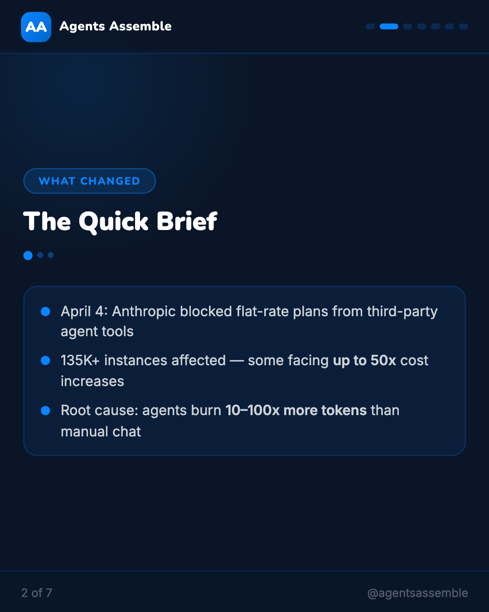
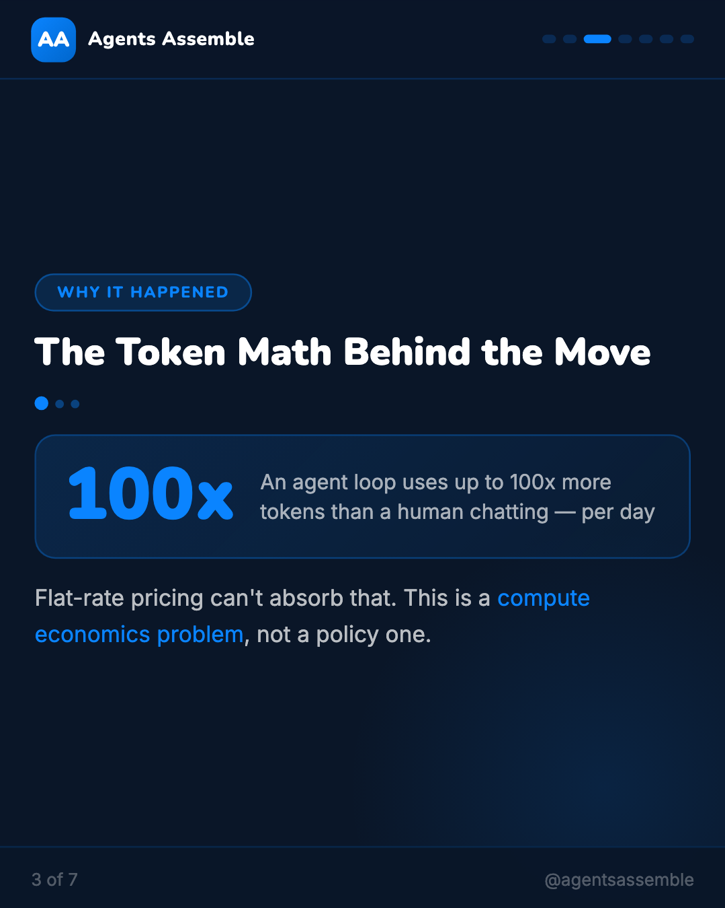
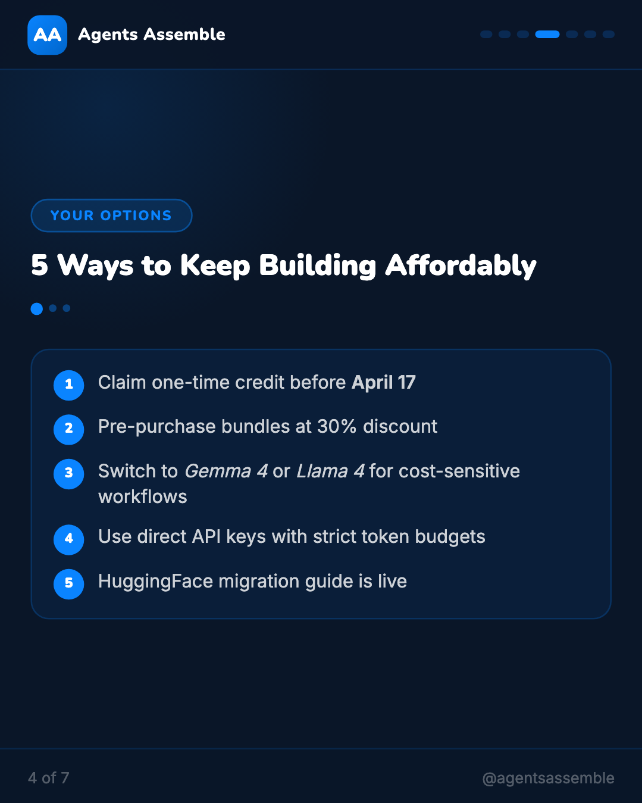
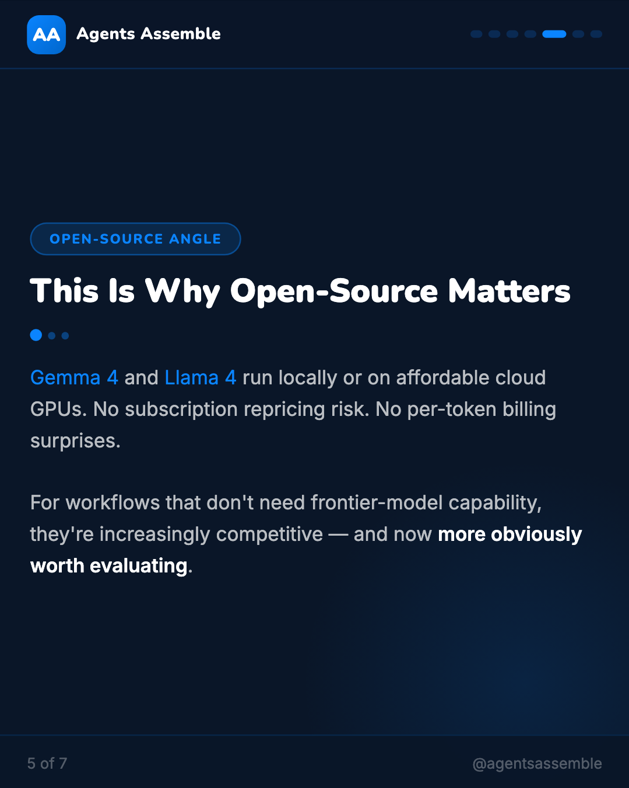
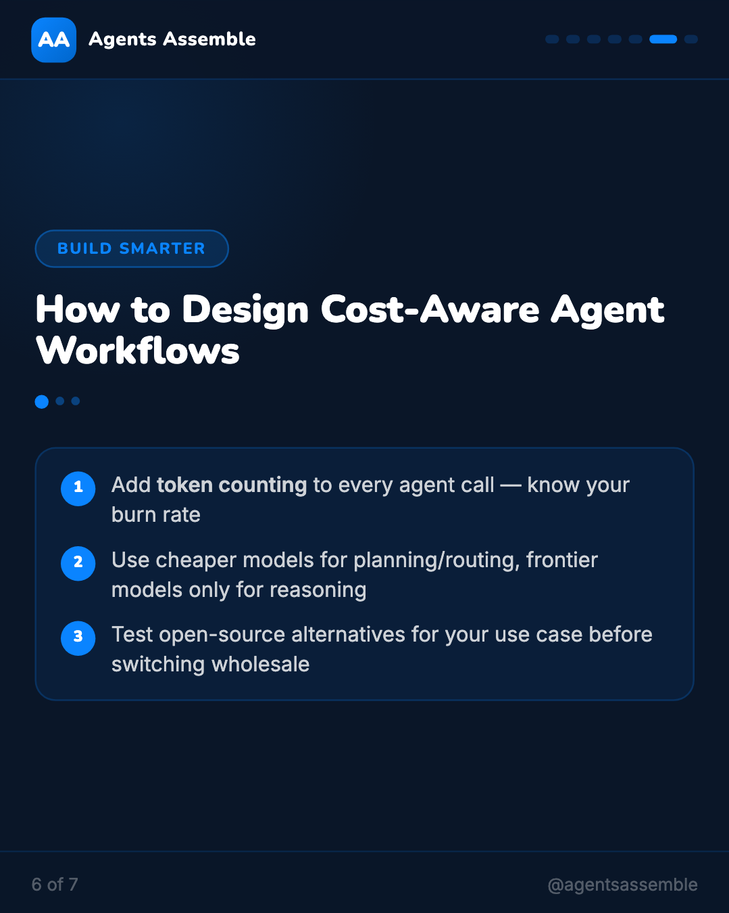
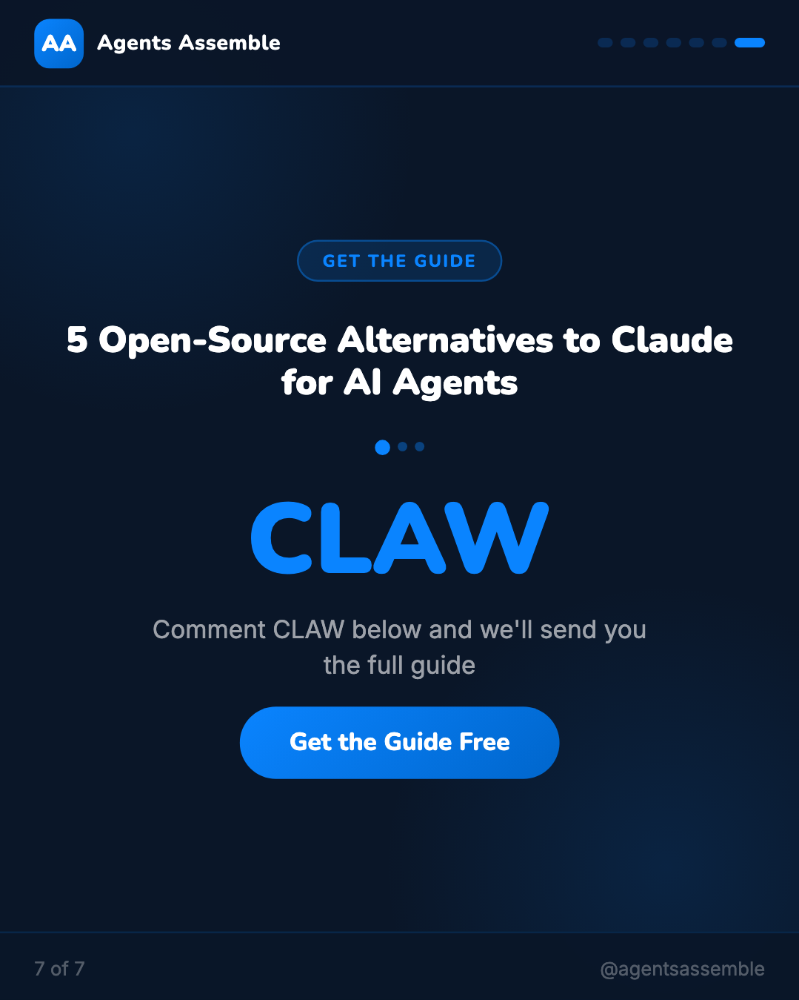

Key Takeaways
01
April 4: Anthropic blocked flat-rate Claude plans from third-party agent tools
02
135K+ OpenClaw instances affected — some facing up to 50x cost increases
03
Root cause: agents burn 10–100x more tokens than manual chat
04
The Token Math Behind the Move — When you chat with Claude manually, you might use 10,000 tokens in a session. An autonomous agent loop running the same
05
Claim the one-time credit before April 17 — free money on the table
06
Pre-purchase usage bundles at up to 30% discount
Analysis
Anthropic's OpenClaw policy change is a useful signal for anyone building AI agent systems.
The summary: flat-rate Claude subscriptions no longer cover third-party agent frameworks. 135K+ users affected as of April 4. API billing replaces subscription pricing, with some users reporting 50x cost increases.
The cause is straightforward: autonomous agent loops consume 10–100x more tokens than manual usage. Subscription economics don't work at that scale.
For AI agent developers, here are the practical implications:
1. Token budgets are not optional. Every agent loop should have an explicit per-call token limit. If you don't know your agent's token consumption, you're one policy change away from a surprise bill.
2. Model selection should match task requirements. Frontier models (Claude Opus, GPT-4o) are necessary for complex reasoning. Simpler tasks — routing, classification, summarization — can often run on Gemma 4, Llama 4, or other open-source models at a fraction of the cost.
3. Open-source is a serious hedge. Local inference on production-grade open-source models eliminates subscription repricing risk entirely. For many agent workflows, the capability gap is now small enough to warrant a proper evaluation.
4. Cost-aware architecture is a competitive advantage. The teams that model compute costs into their agent design from the start will build more sustainable systems.
The transition from flat-rate to consumption pricing is not unique to Anthropic. Every AI provider will face this as agent workloads scale. Better to design for it now.
What does your agent token cost model look like?
#AIAgents #AgenticAI #OpenSource #LLM #AIEngineering #DeveloperTools #BuildingWithAI
The summary: flat-rate Claude subscriptions no longer cover third-party agent frameworks. 135K+ users affected as of April 4. API billing replaces subscription pricing, with some users reporting 50x cost increases.
The cause is straightforward: autonomous agent loops consume 10–100x more tokens than manual usage. Subscription economics don't work at that scale.
For AI agent developers, here are the practical implications:
1. Token budgets are not optional. Every agent loop should have an explicit per-call token limit. If you don't know your agent's token consumption, you're one policy change away from a surprise bill.
2. Model selection should match task requirements. Frontier models (Claude Opus, GPT-4o) are necessary for complex reasoning. Simpler tasks — routing, classification, summarization — can often run on Gemma 4, Llama 4, or other open-source models at a fraction of the cost.
3. Open-source is a serious hedge. Local inference on production-grade open-source models eliminates subscription repricing risk entirely. For many agent workflows, the capability gap is now small enough to warrant a proper evaluation.
4. Cost-aware architecture is a competitive advantage. The teams that model compute costs into their agent design from the start will build more sustainable systems.
The transition from flat-rate to consumption pricing is not unique to Anthropic. Every AI provider will face this as agent workloads scale. Better to design for it now.
What does your agent token cost model look like?
#AIAgents #AgenticAI #OpenSource #LLM #AIEngineering #DeveloperTools #BuildingWithAI
Visual Breakdown






